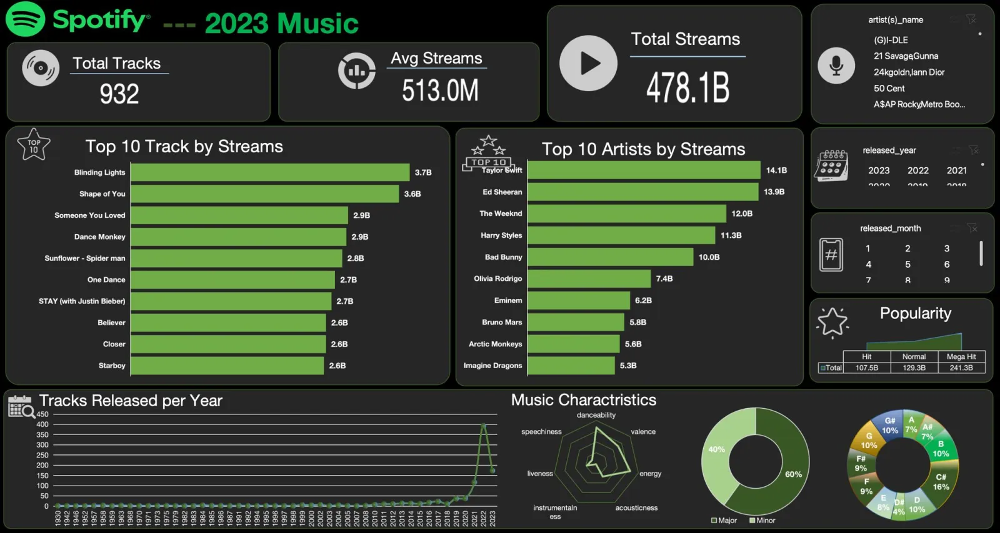

Music data · Excel PivotTables
Spotify 2023 Dashboard
Top tracks and artists, decade-wise popularity and audio features across 932 tracks.
- LiveInteractive dashboard · rebuilt from the dataset
- ScreenshotOriginal Excel dashboard · screenshot
- CodeWorkbook on GitHub
- Tracks
- 932
- Tools
- Excel · PivotTables · Slicers
- Charts
- Radar, donut, rankings
- Data
- Kaggle · Spotify 2023
What 2023 actually streamed.
Source: READMEA dashboard of Spotify's most-streamed songs of 2023, built with Excel PivotTables, donut and radar charts, summary KPIs and slicers.
It answers which music era dominates streams, how artists and tracks trend by year and month, and how audio features behave.
Explore the year in music.
Loading the interactive dashboard…
The Excel dashboard.

Four views.
Source: READMEKPIs
Total tracks and average streams.
Rankings
Top tracks and artists, with year and month filters.
Music characteristics
A radar chart of audio features.
By decade
Decade-wise popularity.
Findings.
- 478B
total streams across the 932 tracks; the median track has 285.7M.
- 3.70B
Blinding Lights (The Weeknd, 2019) is the most-streamed track, ahead of Shape of You (3.56B).
- 16% → 50%
The 149 tracks with a billion or more streams (16% of tracks) take 50.5% of all streams.
- 42%
of the tracks were released in 2022 (392); 77% are from the 2020s.
- 1.18B
average streams for 2010s tracks, against 339M for 2020s tracks: older hits have had longer to collect streams.
- 34 tracks
Taylor Swift has the most tracks and the highest total (14.05B), counting the artist credit exactly as listed.
Computed from spotify-2023.xlsx in the project repository.